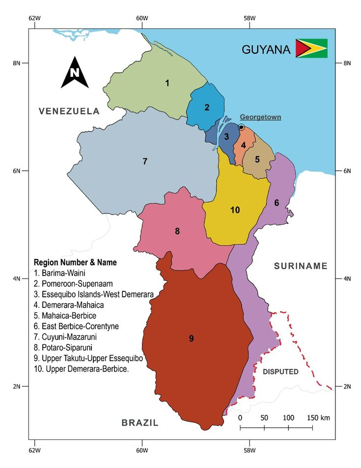

- Guyana is Located in South America, on the northern coast of South America, bordered by the Atlantic Ocean to the North, Venezuela to the West, Brazil to the South, and Suriname to the East. Within that Guyana has 10 administrative regions in the country.
-The Flag of Guyana Is called “the Golden Arrowhead” which created by An American vexillologist Whitney Smith. As the 5 color flag represent different meaning of the country.
-Green: Represents the country's agriculture and forests.
-White: Represents the rivers and water potential.
-Gold: Represents mineral wealth and progress.
-Black: Represents perseverance and endurance.
-Red: Represents zeal and the dynamism of nation-building.

-Guyana have A coat of arms that represent the country